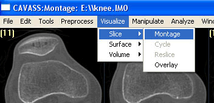
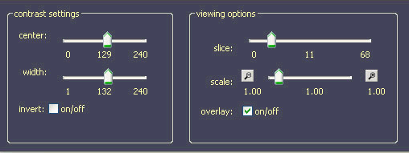

CAVASS Tutorial
MIPG
B.1 How to correct the non-uniformity present in an image
The Image sensors have various imperfections, such as geometric distortions due to magnetic field variations, radio-frequency inhomogeneities causing "image shading", and imperfect slice profiles.
In order to correct for the image shading artifact the following steps need to be followed:
Click on Preprocess > Scence Operations > Filter.
(Files browsing window will pop up.)
Choose the the image file (IM0) which needs correction.
For example: knee.IM0
At Down-Right corner, on Filter : Type, Click and Choose on Inhomo.
Now you can clik on Save to make a new correted output IM0 file.